更新日 : 2013/06/02
去年は小さくて、花が1つしか咲かなかったブラックベリーですが、今年は巨大になって沢山花が付きました。
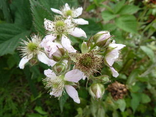
花がかたまって咲くんですね。
どんな大きさの実が付くか楽しみです。
更新日 : 2013/07/21
ブラックベリー初収穫です。
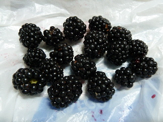
今回はちょっとですが、木にはまだ沢山なっています。
なんか甘い果実なイメージがあったんですが、案外爽やかな甘さなんですね。
更新日 : 2013/08/10
今年はブラックベリーを沢山食べました。
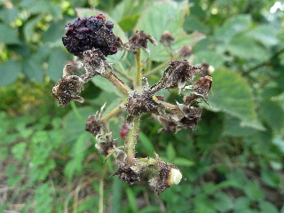
もうシーズンは終わりですね。
ブラックベッリーの木はドンドン成長しているので、来年はもっと沢山食べれるんだろうな。
更新日 : 2014/07/06
まだ数は少ないですが、黒いものが出てきました。
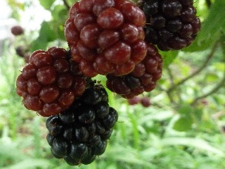
黒いのを食べた感想ですが、爽やかな甘さでした。ジャムにするのが一番かな。
今年は大量に採れそうなので、色んな食べ方に挑戦できます。
更新日 : 2014/07/12
鍋に半分位のブラックベリーを収穫しました。
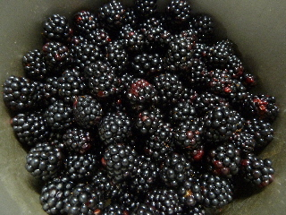
これから煮ます。ジャムにしてもいいですが、それだと甘すぎて量を沢山食べれないので、コンフィチュールっぽくします。
ドンドン食べて、また次を収獲します。
更新日 : 2014/07/19
あまり手間がかからないブラックベリーですが、最近嫌な虫がいます。
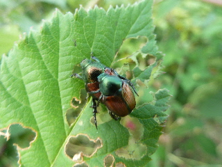
マメコガネが葉っぱを食べています。
そこそこ数はいますが、ブラックベリーが巨大に育っているので、あんまり気にはなりません。
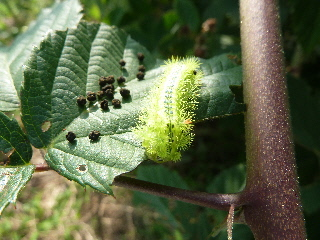
問題はこいつです。ヒロヘリアオイラガっていうんでしょうか。この毛虫がやっかいです。
毒があって痛いです。さわったつもりがなくても、収獲の時に触れてたりして、気づいたら肌が腫れて痒くなってたりします。
ムヒの高いやつやオロナイン使ってもなかなか治らない。
ブラックベリーに限らないですが、毛虫がいそうな場所は注意して作業しないといけないですね。
美味しそうな実があるからって、木の下にもぐり込んじゃだめですね。
取りやすい場所の実だけ採るのが安全です。
更新日 : 2015/03/15
暖かくなってきましたね。
屋外の作業がしやすくなりました。
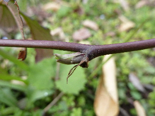
ブラックベリーの木の芽も大きくなってきて、そろそろ芽が出そうです。
更新日 : 2015/05/03
もうちょっとで花が咲きますね。
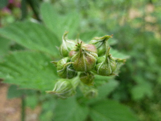
去年沢山剪定したので、今年は少ないかな。
剪定の量を考えてやらないといけなかったです。
去年挿し木した木は、まだ花が付いていませんでした。
更新日 : 2015/06/28
ブラックベリーの実が一つだけ黒くなったので、味見しました。
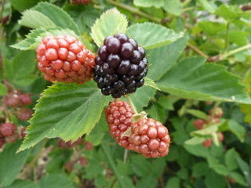
初ものだけあって、爽やかな甘みでした。もうちょっと甘くなって欲しいな。
たぶん1週間したら大量に収穫が出来そう。
更新日 : 2015/07/11
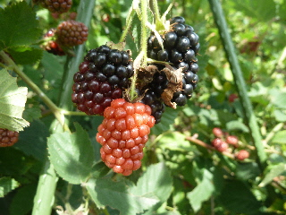
まだ黒くなっているのは少ないですが、少量のジャムが出来るくらい収穫しました。
ブラックベリーは種が大きくて堅いので取り除くのが面倒です。
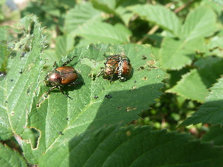
今年も虫が沢山葉っぱを食べていました。
去年剪定を沢山したせいか、今年は毛虫が発生しなかったです。おかげで収穫がとっても楽です。
今年も収穫が終わったらバッサリ切ろう。
甘い実が沢山食べたいです。
【おいしいものを食べよう。】【たくさん寝よう。】
【ソロ活をしよう!】【季節感のあることをしよう。】【動画視聴はほどほどに。】【当サイトの全てのコンテンツは無断転載禁止です。】